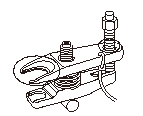
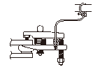
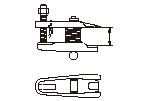

ボール ジョイントの取外し
専用工具
ボール ジョイント リムーバ28 07MAC-SL00201
専用工具は、確実に取付け、ボール ジョイントの分離作業を行うこと。確実に取付けられない場合、ボール ジョイント ピンやブーツを損傷したり、締込むときに外れて思わぬ損傷を招くことがあるので、充分注意して取付けを行い作業すること。
ボール ジョイントの取外しは、必ず専用工具を使用して行い、絶対にハウジングや各部品を叩いたりしないこと。
ボール ジョイント ピン（A）のネジ端部を保護するため、ピンに六角ナット（B）を取付け、ピン端部とナット端面を同一面にする。
専用工具のプレッシャ ボルト保護と工具装着性を容易にするため、図に示す部分にグリースを塗布する。

専用工具を図のように取付ける。ジョー部を差込むとき、ボール ジョイント ブーツを損傷しないように注意する。ジョー部の間隔は、アジャスティング ボルトのノブ（A）を回して調整する。
脱落防止のため専用工具は、ひも（B）で吊っておくこと。

プレッシャ ボルト（A）とアジャスティング ボルト（B）のノブ（C）を回して上下のジョー部（D）が平行になるように調整した後、プレッシャ ボルトを手で締付け、再度ジョー部が平行であることを確認する。
ジョー部を平行に調整するとき、アジャスティング ボルトのノブは、ジョー部の支点となるように図に示す向きにする。
レンチを使用して、ボール ジョイント ピンが穴から抜けるまでプレッシャ ボルトを締込む。必要な場合は、ボール ジョイント ピンのテーパ部に浸透性潤滑剤を浸透させる。
専用工具と六角ナットを取外して、ボール ジョイントの接続を外す。
ボール ジョイント ブーツの劣化、損傷を点検し、必要な場合は交換する。



 ジョー部を平行に調整するとき、アジャスティング ボルトのノブは、ジョー部の支点となるように図に示す向きにする。
ジョー部を平行に調整するとき、アジャスティング ボルトのノブは、ジョー部の支点となるように図に示す向きにする。